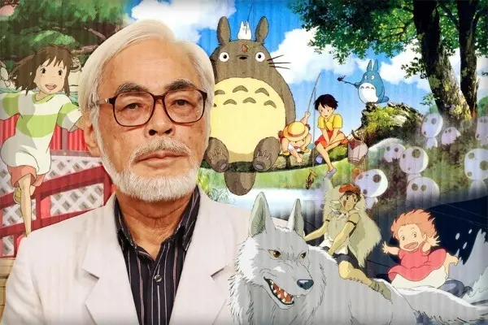

经历详解

宫崎骏和《魔女宅急便》
1964年，社内开始工会活动，领导是大冢康生，副委员长是高田勋，书记长就是宫崎骏。宫崎骏于东映动画公司认识了在他动画生涯中有着重要影响力的前辈高田勋，在此期间参与了《狼少年肯》（是东映首部动画电视剧）、《太阳王子霍尔斯的大冒险》（高田勋执导）、《穿长靴的猫》（制作人矢吹公郎，1969年公映）等动画的制作，担任原画或场面设计的职务。社内的老前辈大冢康生发现了东京大学毕业的高田勋等人的才华。 1965年，工会的这群人开始一起制作《太阳王子霍尔斯的大冒险》，大冢为作画监督，当时尚为新人的高田勋被他提拔为监督。由于宫崎骏在工作中起了很大作用，大家为他发明了一个职位：场面设计。富有文艺才华的高田勋给这部作品带来了崭新的概念，里面加入了更多深刻的内涵和丰富的表现，可以说这是日本第一部不仅仅是为儿童制作的长篇彩色动画。 1969年他开始在报纸上以秋津三朗的笔名连载短篇漫画《沙漠之民》。这可能是后来《风之谷》的一点原型。-
宫崎骏和《千与千寻》
1971年，宫崎骏、高田勋、小田部羊一一起从东映动画跳槽到大冢康生所在的A-Pro。作为新企划《长袜子的皮皮》的主要创作人员之一，宫崎首次出国旅行到苏格兰考察。不过由于原作者的原因，这个企划最后被放弃了。原本宫崎骏就喜欢欧洲村镇的风景，这次经历给他的印象出现在很多以后的作品中。 1974年，三人一起转到Zuiyou映像，即后来以“世界名作剧场”系列而闻名的日本Animation的母公司。三人合作的第一部动画 《阿尔卑斯山的少女》可以说是奠定整个系列风格的作品，高田勋描写日常生活为主，强调动作时间安排的导演风格就此形成。这种崭新的动画风格获得了大成功。宫崎骏这次的职务是Layout和画面构成，又是为了配合新的作画形式 1976年，三人在世界名作剧场系列中高田勋还担任了《寻母三千里》，《红发少女安妮》（1979年）的监督。后来，修炼已久，有了许多TV单集主导经验的宫崎骏1977年首次得到了监督的职位，这就是《未来少年柯南》（1978年）。和比较尊重原作、作风沉稳的高田勋导演相比，宫崎骏的特点是想象力和对于动作的表现力丰富。本来是悲观色彩的原作被宫崎改成了明朗的少年少女故事。这个故事可以看到后来《天空之城》等故事的影子。 - 
宫崎骏和《天空之城》
1979年，为了制作剧场版动画《鲁邦三世卡里奥斯特罗之城》转入东京Movie新社（这也是宫崎骏的第一部电影作品），作画监督是鲁邦动画系列的最初创作成员大冢康生。如果你对于GHIBLI的作品觉得不错的话，请务必看看这部作品，他有着和后来GHIBLI作品相当的质量和魅力，至今仍然是传说的中的经典。不过，当时受到机器人潮的影响票房只有前作的一半，在后几年80年代初的电视放送中还是受到欢迎。之后，宫崎骏就在东京movie新社的新人养成公司TELECOM工作，继续制作新鲁邦的TV系列（作为监督和剧本创作了145集“死之翼信天翁”和最终的155集“再见，可爱的鲁邦”）。在这里，宫崎骏提出了成为后来《龙猫》《幽灵公主》前身的企划。当然没有被采用。 1981年，德间书店新创刊的动画杂志《Animage》的总编铃木敏夫想要制作动画人员访问专辑，本来是打算访问高田勋，但被其拒绝，最终成为宫崎骏的访问专辑。 1983年，从太阳王子时代就一起合作的人们再次集合起来，《风之谷》的动画开始制作。宫崎骏一人担任导演、脚本、分镜表的全部工作。由于从最底层一直干到最上层，宫崎骏有着主导从故事到作画，动画大部分工作的能力。电影最后变成了宗教般的结尾，虽然制作者觉得不大满意，但是在放映时却意外的非常让人感动。 -
宫崎骏和《龙猫》
1985年在德间书店的投资下，宫崎骏联合高田勋共同创办了吉卜力工作室，该名字来自二战时候意大利的一款侦察机，意思是“撒哈拉沙漠的热风”，由于宫崎骏父亲曾经是飞机制造厂工作，从小宫崎骏就对飞行和天空充满着向往，这也是吉卜力的由来之一。也正因为这个宫崎骏在日后的许多作品中始终贯穿着天空场景和各式各样飞行器的刻画。宫崎监督此间的作品则是绘本修那之旅。 1988年宫崎监督的《龙猫》和高田勋监督的《萤火虫之墓》同时放映。尽管后者得到了文艺界的广泛赞扬，也感动了无数观众，但是前者才是Ghibli一直最为人气的作品之一。而Ghibli之后也形成了两位监督轮流制作动画电影的体制。